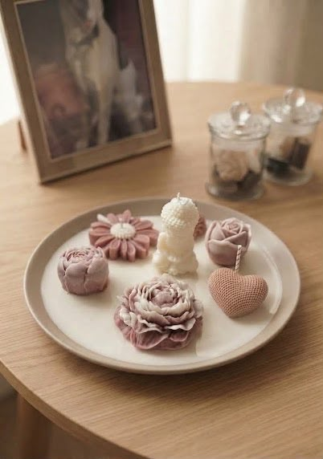
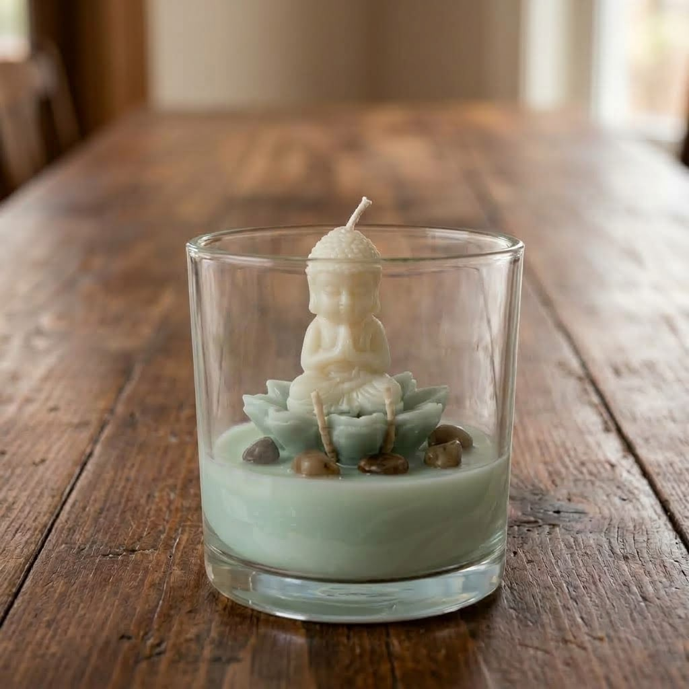
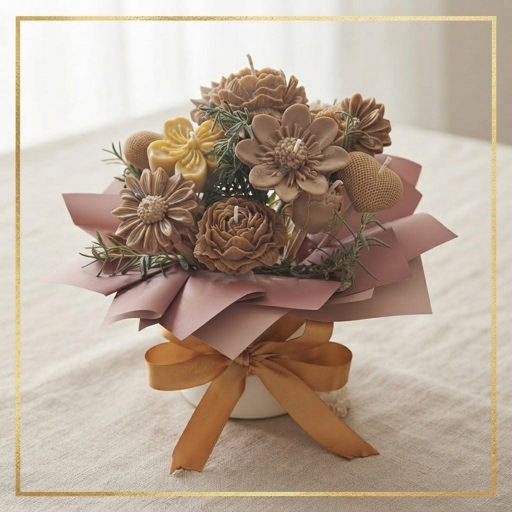
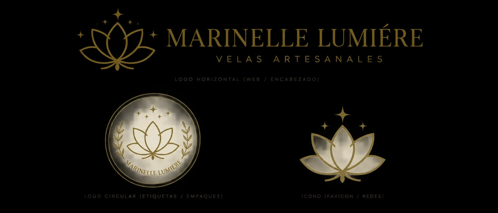
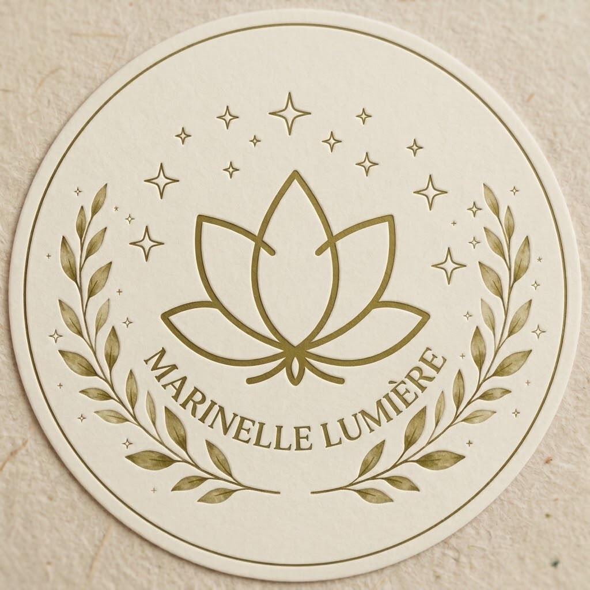
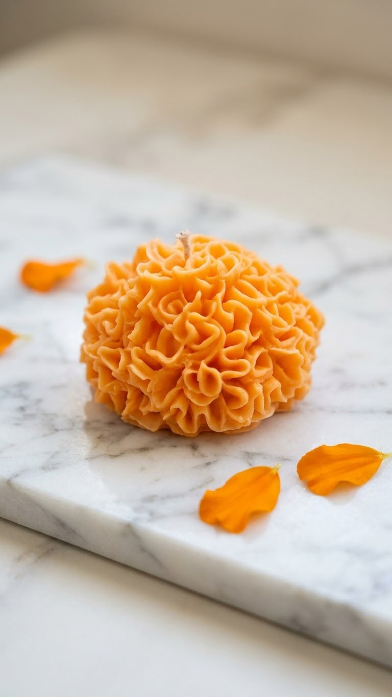
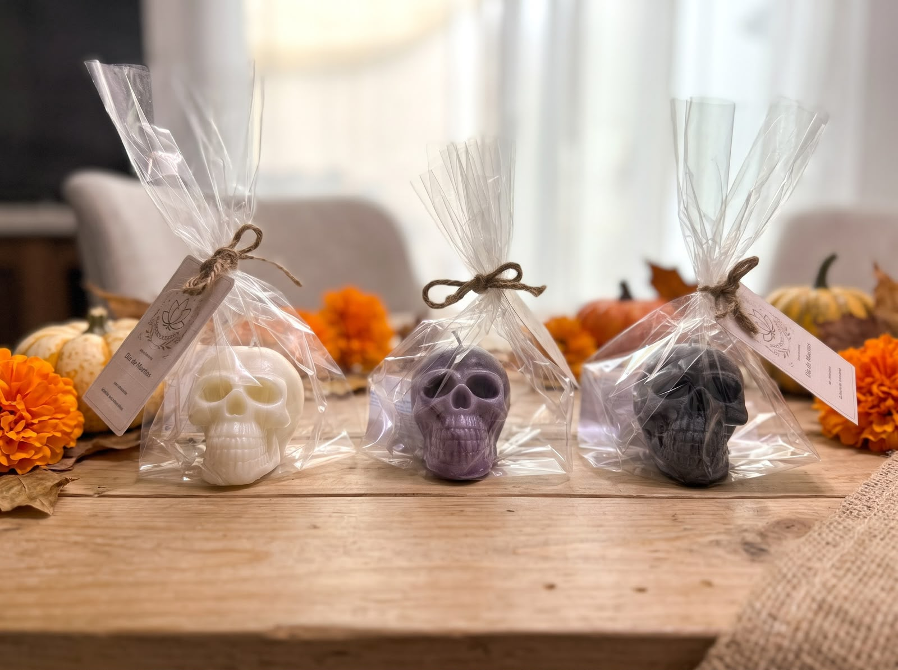

Calaveras y Cempasúchil
Iluminamos tus momentos. Velas artesanales para acompañar tu día a día.
Ver colecciónTodo el catálogoNuestras favoritas
Las velas más vendidas
Catálogo
Elige tu vela y tu empaque. Pedimos por WhatsApp.
Relajación y Spa
Loto Zen y Armonía · Esencia de Bambú y Spa
Plato Buda y Flores
100% cera de soya de quemado limpio, envase de cerámica grueso y doble pabilo de algodón.
$500 MXN
Vaso con Buda en flor
100% cera de soya de quemado limpio, envase de vidrio grueso, tapa de bambú y doble pabilo de algodón.
$250 MXNVaso clásico
Sin figura, solo aroma. 100% cera de soya de quemado limpio, vidrio grueso, tapa de bambú y doble pabilo de algodón.
$300 MXNAromas Cálidos
Aroma a Café
Bouquet con 16 flores
100% cera de soya de quemado limpio, en caja de regalo con tapa para ramos.
$500 MXNAromas Florales y Frutales
Jardines de California y Mandarina
Bouquet floral
100% cera de soya de quemado limpio, en caja de regalo con tapa para ramos.
$500 MXN
Vaso clásico
Sin figura, solo aroma. 100% cera de soya de quemado limpio, vidrio grueso, tapa de bambú y doble pabilo de algodón.
$300 MXNTradición · Temporada
Velas esculturales de parafina Malasia, con pabilo de algodón
Flor de Cempasúchil
Parafina Malasia para máxima definición de relieves tridimensionales y pabilo de algodón para un quemado estructurado.
$40 MXN
Escultural Calavera
Parafina Malasia para máxima definición de relieves tridimensionales y pabilo de algodón para un quemado estructurado.
$65 MXNNuestra historia
En Marinelle Lumière creemos que una vela es mucho más que cera y pabilo; es una experiencia que transforma cualquier espacio. Nuestro objetivo es llevar a tu hogar piezas decorativas y aromas que te inviten a pausar, respirar y disfrutar del momento.
Elaboración artesanal
Cada vela es vertida a mano, cuidando meticulosamente detalles técnicos como la temperatura exacta, la formulación de nuestras ceras y la selección del pabilo ideal para cada diseño, garantizando siempre un quemado limpio y uniforme en todas nuestras piezas.
Hechas a mano en Toluca, Edo. Méx.
Preguntas frecuentes
¿Cómo cuidar mi vela y recortar el pabilo?
Para un quemado óptimo y sin humo, recorta el pabilo a unos 5 mm antes de cada uso. En el primer encendido, deja que la vela arda hasta que la cera derretida alcance todos los bordes del envase; esto evitará que se forme un hueco o "túnel" en el centro.
¿Cuáles son los tiempos de elaboración y envío?
Al ser un producto artesanal hecho a mano, nuestro tiempo de elaboración es de 3 a 5 días hábiles. Una vez despachado, el tiempo de entrega dependerá de tu ubicación.
¿Cuál es la política de cambios o reembolsos?
Cuidamos cada detalle del empaque para que tus velas lleguen impecables. Si tu pedido sufre algún daño durante el trayecto, contáctanos por WhatsApp dentro de las primeras 48 horas con fotografías del producto y con gusto te daremos una solución rápida.
¿Cuál es la diferencia entre la cera de soya y la parafina Malasia?
Utilizamos 100% cera de soya natural para nuestras velas en envase (vasos, platos y frascos) porque ofrece un quemado limpio, dura más tiempo y distribuye excelente el aroma. Para nuestras velas esculturales (como calaveras y cempasúchil), utilizamos parafina Malasia de alta calidad, ya que su firmeza nos permite lograr acabados lisos y mantener perfectos los relieves tridimensionales.
Contacto
Toluca, Estado de México